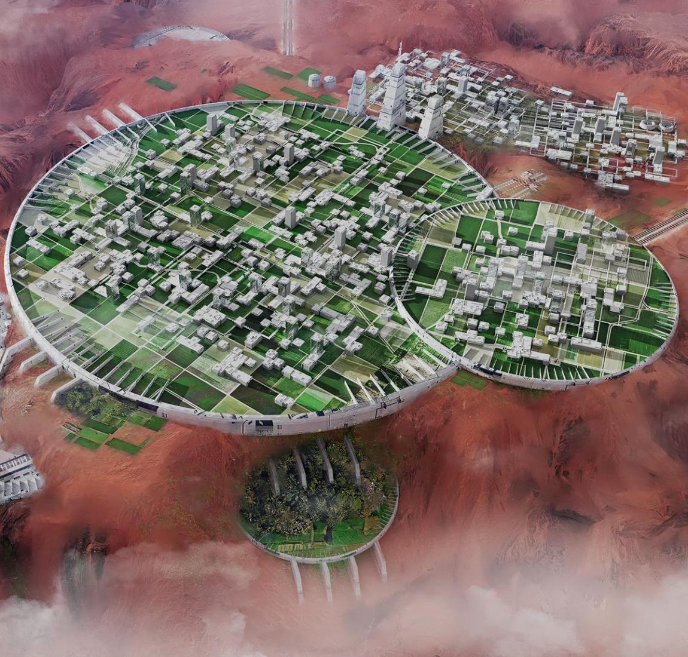

核心能力
我们构建了多元互补的管理业务体系，在控制下行风险的前提下，系统性捕捉市场定价错误所带来的超额收益机会。
业务一
【本公司已推出适用于不同需求和环境的众多农业体系供应计划：1.设计部署于G型与K型恒星光谱的主粮系列，基因适配多重辐射环境，单位面积产出为地球农业峰值的17倍。2.轨道零重力蛋白架构培养的高密度蛋白系统，跳过畜牧环节，氮利用率接近100%。 3.适应红矮星低光谱的极端环境作物，具备辐射高波动抗性，适用于冻土与真空边界农业。】
业务二
【太空农业面对巨大的自然和政治风险，我们的应对做法非常简单：1.产能分散配置在大量恒星系，300%的低维护产能冗余设计，阻断风险的传播路径。2.长期物流供应合约，签订长期运力协议，锁定成本。3.构建多元货币互换体系，采用利率掉期与货币远期合约，对冲各主权实体的政治风险。】
业务三
【农业环、行星改造、轨道蛋白工厂等战略性资产——可通过自修复结构和太阳能工业来实现零损失翻新，以此达到折旧周期300–1000年，超过90%的重资产均可短时间内重新部署至其他恒星系，所有核心设施将按计划实现被动防御能力。同时始终具备设计和建造能力，努力改善投入回报比。】
旗舰业务
【行星生态圈改造，是指：在保留轨道结构与核心物理参数的前提下，通过恒星能量调控、气体重构、生物基因编译与闭环生态设计，将目标行星转化为可控、可扩展、高产出的功能型生态单元。】
